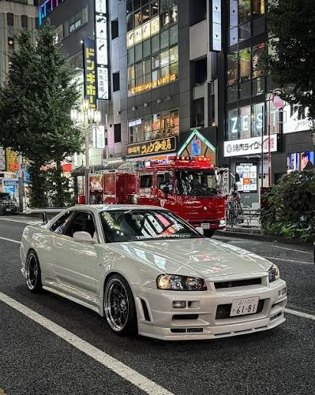

Hey there, I'm John O'Reilly, the proud owner of Wheels on Fire. I've been in the car business for as long as I can remember, and I love a well-tuned engine. I’m a bit of a perfectionist — maybe even more with cars than with people, if I’m honest. Truth be told, I've been around cars since I could barely walk. My dad was the one who started it all. From a young age, I'd be right beside him in the garage, watching him work on cars, asking questions, and getting my hands dirty whenever he'd let me. He was the one who sparked my fascination with everything automotive, and looking back, I suppose it was only a matter of time before cars became my whole life. Things really took off when my family moved to Japan while I was still young. Being surrounded by Japanese car culture was like stepping into a whole new world. I became fascinated with the JDM scene — the cars, the tuning culture, the underground meets, and the sheer creativity people put into their builds. Japan wasn't just where I grew up; it became a huge part of how I came to understand and appreciate cars. My first real taste of car ownership was my dad's old Subaru. It wasn't anything fancy when he first had it, but Dad had modified it himself over the years, and to me, it was the coolest car in the world. I learned a lot from that Subaru — not just about driving, but about modifying, maintaining, and putting your own personality into a car. It was the car that made me realise I didn't just want to admire cars; I wanted to build and work on them myself. As the years went on, my passion for the JDM scene only grew. I've always had a particular soft spot for Nissan, and these days, my pride and joy is a Nissan Skyline R34. It's the sort of car I could spend hours working on without ever getting bored. There's just something about the R34 that never gets old. I'm also heavily into the drifting scene. There's nothing quite like the feeling of getting a car sideways and keeping it there — the precision, the control, and the mechanical skill involved. Drifting combines everything I love about cars: tuning, driving, technique, and a little bit of madness thrown in for good measure. That's really what Wheels on Fire is all about. It's more than just buying and selling cars to me. It's about the culture, the craftsmanship, and the people who understand why a car can mean so much more than simply getting from A to B. I've spent my whole life around cars, and I wouldn't have it any other way.